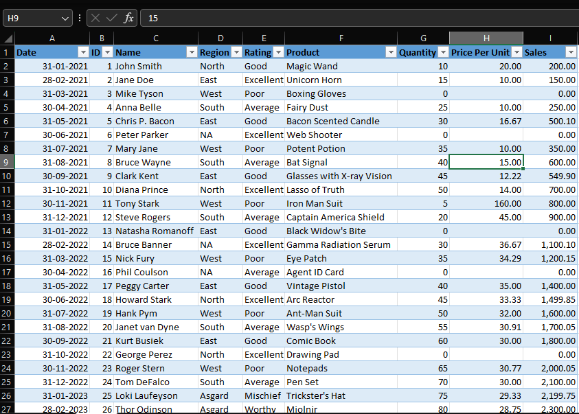
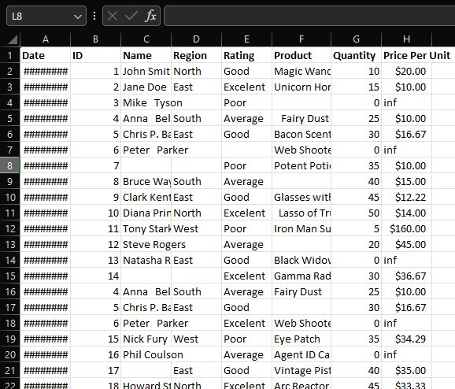
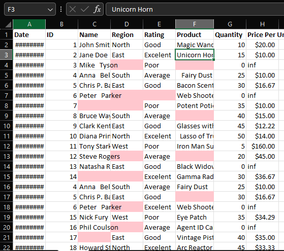

Sales Data Cleaning
Sales Data Cleaning
& Standardization
Sales Data Cleaning & Standardization Project
About the Project
Cleaned and standardized a 500-row fictional sales dataset containing product, customer, and region information. Corrected structural issues, removed inconsistencies, and transformed the dataset into an analysis-ready format using Excel and Google Sheets.
Key Tasks Performed
- ✅ Imported a 500-row messy sales dataset and structured it for analysis.
- ✅ Auto-formatted inconsistent column widths and row heights for readability.
- ✅ Removed duplicate entries based on ID and Name.
- ✅ Applied TRIM and CLEAN to remove extra spaces and strange characters.
- ✅ Replaced blank and missing values using Find & Replace and IF logic.
- ✅ Corrected spelling mistakes and standardized text case (PROPER/LOWER).
- ✅ Converted incorrect number formats (text → number, currency, “inf” handling).
- ✅ Used IFERROR to catch invalid calculations and missing fields.
- ✅ Converted data into an Excel Table for easy filtering and sorting.
Tools & Technologies Used
- Tools: Excel, Google Sheets
- Skills: Data Cleaning, Text Functions (TRIM, CLEAN, PROPER), Remove Duplicates, IF, IFERROR, Data Formatting.
Process Visuals
1. The Messy Data (Before)
The original dataset had inconsistent spacing, formatting issues, and unstructured data.

2. Identifying Issues (Blanks & Errors)
Identified blank cells and calculation errors to prepare for cleaning.

3. The Final Cleaned Data (After)
The dataset is now standardized, formatted as a table, and ready for analysis.
📂 Project Files
Conclusion
This project demonstrates the ability to take raw, unstructured data and transform it into a high-quality dataset suitable for professional analysis. By applying advanced Excel functions and logical tests, data integrity was restored.